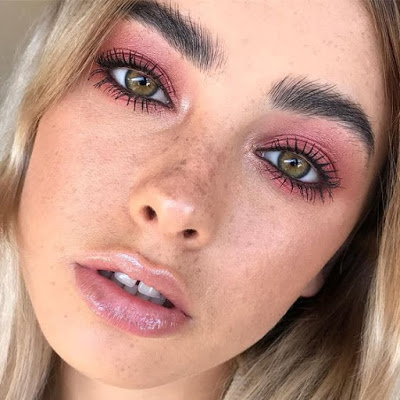
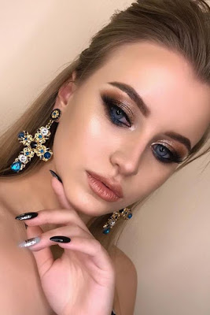

A produção durante o dia exige makes mais leves e sutis, primeiramente devido a questão do clima quente que predomina a maioria dos estados do Brasil, e segundamente porque você não quer correr o risco de ver sua maquiagem derretendo e borrando com facilidade por aí não é mesmo? rs 😆😆
Portanto minha amiga, invista em sombras de tons neutros, bases de média cobertura, um bom primer e um bom fixador pra fixar bem essa maquiagem na pele. O ideal seria você usar aquela famosa make beeeem basicona, mas lembrando: Sem excessos!❌
A maquiagem para noite é aquela tipica maquiagem mais pesada para deixar qualquer um de boca aberta e já chegar chegando nos lugares dando aquele famoso CLOSE. 📸
Basicamente, esse tipo de maquiagem costuma ser mais elaborada, com cores mais intensas, brilhantes, e claro, mais escuras. Até porque são essas que podem proporcionar um destaque a mais ao rosto, já que à noite a luminosidade é menor. Então minha amiga, invista em sombras de tons mais escuros pra fazer uns esfumados babadeiros e não se esqueça do glitter!✨
